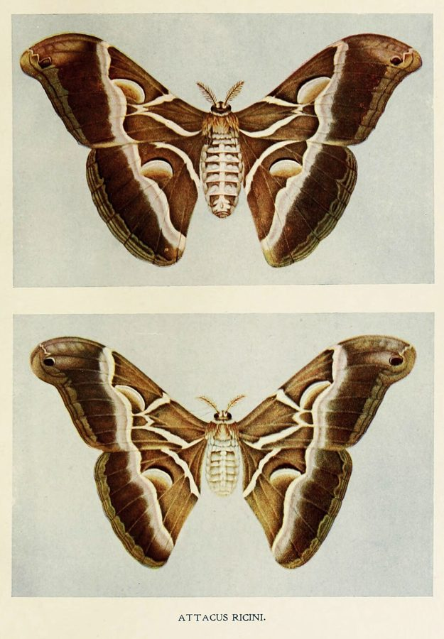

एरी रेशम कीटEri Silkmoth
Samia ricini · Saturniidae · INS-0077

- Scientific nameवैज्ञानिक नाम
- Samia ricini (Donovan, 1805)
- Familyकुल
- Saturniidae
- Hindiहिंदी
- एरी रेशम कीट
- Local namesस्थानीय नाम
- eri, eri resham keet, eri moth, arandi resham keet, castor silkmoth
- Status hereयहाँ की स्थिति
- cultivated
- Movementआवागमन
- Resident, here all year
- IUCNIUCN
- not evaluated
- Reviewसमीक्षा
- audited and independently read
When to look कब देखें
Present all year.साल भर मौजूद।
Uses and possibilities उपयोग और संभावनाएँ
Drawn from the documented uses in the profile below, where each is labelled traditional, current or a research lead. All uses →
Tell it apart from इनसे अलग पहचानें
एरी रेशम कीट / Eri Silkmoth
Samia ricini (Donovan, 1805) — Saturniidae
एरी रेशम कीट — यह एक बड़ा भारी रात्रिकालीन पतंगा है जिसका पालन पूरे दक्षिण और दक्षिण-पूर्व एशिया में रेशा उत्पादन के लिए किया जाता है। यह तितली अरंडी (castor) के पौधे की पत्तियों खाती है और इसकी इल्ली काफ़ी बड़ी होती है, जिसके शरीर पर मोटे काले शूल (spines) होते हैं। इसके कोकून से "एरी रेशा" (eri silk) प्राप्त होता है, जो असम में परंपरागत रूप से रेशम बनाने के लिए इस्तेमाल होता है। यह असम के "पट-साड़ी" (pat silk) का मुख्य स्रोत है। यह तितली पूरे भारत में पाली जाती है, लेकिन असम इसका मूल स्थान है।
Quick Identification त्वरित पहचान
| Feature | Description |
|---|---|
| Size | Large moth; body length 40–50 mm; wingspan 100–140 mm |
| Coloration | Pale cream or yellowish-brown; forewing has wavy dark lines and darker markings |
| Forewing | Contains a pale discal cell mark and wavy cross-lines; reddish-brown markings on outer edge |
| Hindwing | Pale yellow or cream with darker lines similar to forewing |
| Body | Stout, hairy, yellow-brown; females larger than males |
| Antennae | Broad, feathery (pectinate) in both sexes |
Field tip: Look for a large, pale-colored moth attracted to lights near castor fields at night. The large size, pale coloration, and association with castor plants identify the Eri Silkmoth. Its strong, slow flight and sturdy build are distinctive.
Morphology आकारिकी
Biometrics (typical measurements for adults in northern Indian plains):
| Measurement | Range |
|---|---|
| Body length | 40–50 mm |
| Wingspan | 100–140 mm |
| Forewing length | 45–55 mm |
| Weight (female) | 800–1200 mg |
Body: Large, stout, and hairy. The head is small with broad, feathery antennae that are pectinate (comb-like) in both males and females. The thorax is thickly clothed with hair. The abdomen is robust and hairy.
Wings: Pale cream, pale yellow, or yellowish-brown coloration. The forewing contains characteristic wavy dark lines and markings; the discal cell (central area) is marked with a pale oval or circular spot. The hindwing is similarly marked but generally paler.
Sexual Dimorphism: Females are distinctly larger and heavier than males.
Larval (Caterpillar) Stage
The caterpillar is large, distinctive, and highly characteristic:
- Appearance: Growing to 65–70 mm long, the caterpillar is stout and swollen. It is pale green or yellowish-green with a distinctive dark head. The body bears prominent clusters of short, thick, black, and branched spines (setae) on each body segment, giving it a spiky, "urticating" (stinging hair-bearing) appearance.
- Behavior: The caterpillar feeds voraciously on castor leaves and accumulates toxins from the plant, making it potentially distasteful to predators.
- Duration: Grows through 4–5 instars over 22–28 days before pupation.
Behaviour & Ecology व्यवहार और पारिस्थितिकी
Large, slow, nocturnal flyer. The Eri Silkmoth is a large, heavy, slow flyer that is active at night. Males are strongly attracted to artificial lights and to the pheromones of females. Females remain stationary during the day, releasing pheromones in the evening to attract males. The moths are generally sedentary and do not feed as adults; all energy comes from reserves accumulated during the larval stage.
Castor specialist. The caterpillar is highly specialized on Castor (Ricinus communis) and feeds voraciously on the leaves. The species has been under domestication for several centuries and is now cultivated throughout Asia for silk production.
Life Cycle / Phenology जीवन चक्र
| Stage / Season | Event |
|---|---|
| Egg | Laid in clusters on castor leaves; pale yellow; hatch in 7–10 days |
| Larval (Caterpillar) | 4–5 instars; duration 22–28 days depending on temperature; multiple broods per year |
| Cocoon | Spun of thick, bumpy silk; dark brown or grey; pupation lasts 10–18 days between broods or 3–4 months during diapause |
| Adult | Emerges year-round in cultivated areas; peak emergence March to November; lifespan 10–14 days without feeding |
Host Plants or Prey आहार
Larval host plant:
- Castor (Ricinus communis, Castor) — the only host plant. The caterpillar feeds heavily on all plant parts: leaves, young stems, and immature seeds.
Adult diet:
- Adults do not feed. All energy comes from reserves accumulated during the larval stage.
Predators / Natural Enemies शत्रु
- Wasps: Small parasitoid wasps (Ichneumonidae and Braconidae) lay eggs inside caterpillars and pupae.
- Flies: Tachinid flies parasitize caterpillars.
- Spiders: Large spiders and hunting wasps can attack late-instar caterpillars despite their spines.
- Small mammals: Rodents may attack cocoons.
Agricultural / Human Relevance कृषि प्रासंगिकता
Traditional fiber production. The Eri Silkmoth caterpillar produces a silk that is spun into strong, coarse fibers for textile production. In Assam, the eri-silk tradition dates back centuries, with local names like "rengali polu" (Assamese) referring to the silk production process. The silk is used to make traditional garments (pat-saree in Assam).
Today. Eri silkmoth rearing has declined in many regions but remains culturally important in Assam and parts of Northeast India. The practice is undergoing revival as interest in traditional and sustainable textiles grows.
Research direction (a lead, not a result). There is emerging interest in establishing eri silkmoth rearing in eastern Uttar Pradesh as a supplement to agricultural livelihoods, similar to the established practice in Assam. Research on host plant optimization, disease management, and fiber processing would be valuable for farmers in Basti and neighboring districts. The adaptation of eri sericulture to local climatic and agricultural conditions is an open research question.
Expected Locally स्थानीय रूप से अपेक्षित
Not a field record. Written from published accounts for eastern Uttar Pradesh. No confirmed local sighting yet — if you have seen it, that is what the atlas needs.
अभी तक स्थानीय पुष्टि नहीं। यह विवरण प्रकाशित स्रोतों से है, किसी अवलोकन से नहीं।
The Eri Silkmoth occurs wherever castor plants are grown. It is potentially to be expected in Basti district wherever castor (arandi) is cultivated or grows semi-wild. Look for large pale moths attracted to lights near castor fields at night, particularly during the warmer months (March–November). Check castor plants for large green caterpillars with spiny projections. The first local record would be a photograph showing the moth's distinctive pale coloration and the castor plant association, taken with date and location.
Distribution वितरण
Global range: South and Southeast Asia, from India and Sri Lanka through Bangladesh, Myanmar, and Thailand to Indonesia.
In India: Distributed throughout the country wherever castor is cultivated; wild and cultivated populations in southern and eastern regions.
In Uttar Pradesh: Occurs in scattered castor-growing areas; historically less common than in Assam and southern states.
In Basti district / eastern UP: Not yet confirmed but potentially present in castor-growing villages. Castor cultivation is not widespread in Basti, but the species could establish if sericulture interest grows.
Research Questions शोध प्रश्न
Anyone can investigate these | कोई भी इन प्रश्नों की जाँच कर सकता है
- How many eri silkmoth generations can be raised in Basti climate in one year? / बस्ती की जलवायु में एक साल में एरी कीट की कितनी पीढ़ियाँ पाली जा सकती हैं? — Establish a small rearing unit and track generation times.
- What is the castor leaf consumption rate of a single eri silkmoth caterpillar during its entire life? — Conduct rearing trials with measured leaf feeding.
- How does the silk quality and weight of cocoons vary with local castor varieties? — Rear caterpillars on different castor types and measure cocoon parameters.
- Can eri sericulture be integrated with existing castor cultivation as a supplementary livelihood in Basti? — Interview farmers and assess economic viability.
- What are the traditional fiber-processing methods used in Assam, and can they be adapted to Basti conditions? — Document Assamese practices and test adaptation in local conditions.
Similar Species मिलती-जुलती प्रजातियाँ
| Species | How to tell apart | हिंदी | |
|---|---|---|---|
| Indian Moon Moth (Actias selene) | Larger; has bold eye-spots and crescent-moon marking on wings; paler coloration | भारतीय चाँद पतंगा — बड़ा, आँख के निशान | |
| [[common_leopard\ | Common Leopard]] Moth (Phragmataecia castaneae) | Darker brown; white spots arranged in bands; larger antennae | तेंदुआ पतंगा — गहरा भूरा |
Field rule: Large pale cream or yellowish-brown moth with feathery antennae, wavy markings on wings, and strong association with castor plants, is the Eri Silkmoth.
Taxonomy & Classification वर्गीकरण
Original description. Donovan described the Eri Silkmoth as Bombyx ricini in 1805. The type locality is India. The genus Samia was later established to contain the eri and related silkmoth species. The species was moved to Samia from Attacus by later authors.
Subspecies. The nominate subspecies S. r. ricini occurs throughout India and Southeast Asia.
Family and order placement. Order Lepidoptera, family Saturniidae (emperor moths and silk moths), subfamily Saturniinae.
Phylogenetic notes. Samia is a genus of large, silk-producing saturniid moths distributed across Asia. It is closely related to Bombyx (the Chinese silkworm) and other domesticated silkmoths.
IUCN status rationale. Not evaluated. Cultivated species, not threatened in the wild. Domestication history is ancient.
Photo Gallery फोटो गैलरी
No photos yet — add field photos to media/species/eri_silkmoth/ and run node scripts/sync_photos.js.
Photos needed आवश्यक फोटो
- [ ] Adult male at rest (नर विश्राम में)
- [ ] Adult female with wings folded (मादा)
- [ ] Caterpillar on castor leaf (अरंडी की पत्ती पर)
- [ ] Spun cocoon (बने हुए कोकून)
References संदर्भ
- Donovan, E. (1805). An Epitome of the Natural History of the Insects of India and the Islands in the Indian Ocean. London.
- Bingham, C.T. (1905). The Fauna of British India, including Ceylon and Burma. Lepidoptera-Heterocera. Vol. 3. Taylor & Francis, London.
- Agarwal, M.L. & Nair, K.K. (1999). Sericulture and its diversification. Indian Journal of Agricultural Sciences 69(12): 865–871.
- Mukherjee, S. (2002). Eri Silk of Assam: A study on traditional and commercial practice. Ph.D. thesis, Assam University.
- Zoological Survey of India (2010). Fauna of Eastern Uttar Pradesh.
- GBIF Occurrence Data — Samia ricini, Uttar Pradesh (2010–2025).
Source file: species/fauna/insects/eri_silkmoth.md